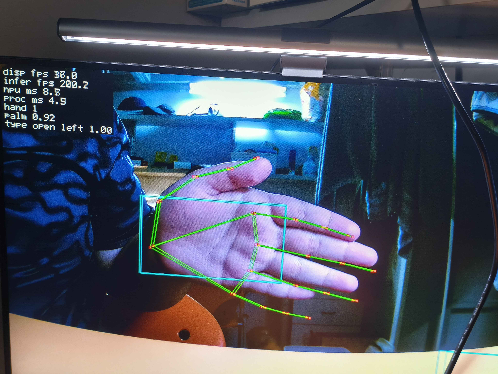

國立成功大學 · 資訊工程學系 · 114 學年度專題成果展
基於手型辨識的
聯詠開發板系統移植
以 Novatek AI3/NPU 加速推論，並預留 microROS 手勢指令介面
Porting MediaPipe Hands to the Novatek NT98690 — AI3/NPU inference & microROS command interface
組員 · Team
段奕丞陳宥穎楊秉宇王浚宇
資訊工程學系 · 1 年級
指導教授 · Advisor
蘇文鈺、涂嘉恒 教授
01
研究動機與目的Motivation & problem statement
語音控制雖已普及，但在不便發聲、不適合出聲或使用者主觀不願出聲的情境下並不適用。本專題改以手勢作為替代人機介面，亦可作為身障者的無障礙操作方式。
核心挑戰：MediaPipe Hands 多在 Python、Android 或桌面環境執行，而聯詠 NT98690 平台缺少 Python runtime、無法直接使用標準 TFLite runtime，且具備獨有 AI3/NPU backend。如何保留 MediaPipe 的 graph／geometry／postprocess 流程，僅將推論後端替換為 AI3/NPU，即為本專題欲解決的問題。
02
實作技術與環境Stack & environment
MediaPipe Hands
AI3 / NPU
HDAL Pipeline
NVT Model
硬體平台 · Hardware
- SoC
- Novatek NT98690 嵌入式開發板
- Sensor
- IMX335 · NV12 / YUV 影像格式
- 輸出
- HDMI 顯示 · ISP 效果控制
軟體分工 · Software
- MediaPipe
- graph 執行 · SSD decode · NMS · rect／landmark 投影
- AI3/NPU
- palm detector 與 hand landmark 模型推論
- Languages
- C++ · Zig · Python（graph glue／板端 ABI／校正工具）
03
系統架構與資料流System architecture & data flow
Zig Launcherapp live hand_landmark.task
MediaPipe CalculatorGraph owns runtimebundle loader · scheduler · capture → infer → overlay → HDMI
Full-rate preview lane
IMX335 → HDAL NV12 framenative camera / VPE output · one outstanding buffer
Live HDMI Preview Sinkdraw cached result on every frame · release HDAL buffer
HDMI overlay + timing HUDskeleton · handedness · gesture · NPU timing · FPS
Sparse inference lane
Snapshotowned NV12 copy + 192 RGB palm tensor
Palm AI3/NPUNVT palm model through nvts_npu_run
Graph GeometrySSD decode · NMS · rotated hand ROI
Rotated Crop224 RGB tensor sampled from original NV12
Landmark AI3/NPU21 points · presence · handedness
Result Cacheprojection · gesture rules · latest overlay state
C++ calculators → Zig board ABI
nvts_cam_*
nvts_npu_*
nvts_overlay_draw_frame
nvts_display_*
04
成果展示Results & performance
≥60FPS
NPU 推論能力
Live cap: camera 30 FPS
6
靜態手勢分類
Open / fist / point
21
手部關鍵點
Hand landmarks
60→22px
線性回歸校正
Landmark RMSE
推論效能比較
Inference throughput (FPS)
≥12×CPU-only 約 5 FPS → AI3/NPU ≥60 FPS；live demo 受 camera pipeline 限制為 30 FPS
關鍵最佳化與成果摘要
Optimization & implementation results
| 板端／影像 | Novatek NT98690 · IMX335 · NV12 / YUV |
| 模型後端 | AI3 / NPU（取代 TFLite runtime） |
| 取樣最佳化 | Palm 192×192 · hand 224×224 fused NV12 crop |
| 轉換成本 | p50 43.5 ms → 約 1.4 ms（板端量測） |
| 校正方法 | 2D affine regression：RMSE 60.1 px → 21.7 px |
| 即時 HUD | skeleton · handedness · gesture · NPU timing · result FPS |

05
結論與未來展望Conclusion & future work
本專題完成 MediaPipe Hands 核心流程在聯詠 NT98690 開發板上的系統移植，並以 Novatek AI3/NPU 取代原始 TFLite 推論後端，使推論能力由 CPU-only 約 5 FPS 提升至至少 60 FPS；目前 live demo 顯示為 30 FPS，主要受 camera／board pipeline 限制。針對量化模型造成的 landmark offset，進一步以線性回歸擬合 2D affine 校正，使骨架更貼近實際手部位置。
- 完成 microROS network transport，使手勢命令穩定發布至 ROS agent。
- 導入 PreviousLoopback + AssociationNormRect + presence gate，降低 palm detector 執行頻率並避免追蹤停滯。
- 擴充手勢分類與 command mapping，支援 multi-hand 與更完整的互動指令。
- 強化低光源、快速移動、遮擋情境穩定度，接軌機器人／智慧家居／無障礙設備。
- 支援使用者自訂手勢與線上校正，提升個人化辨識準確率。
Demo 影片
掃描觀看系統運作展示